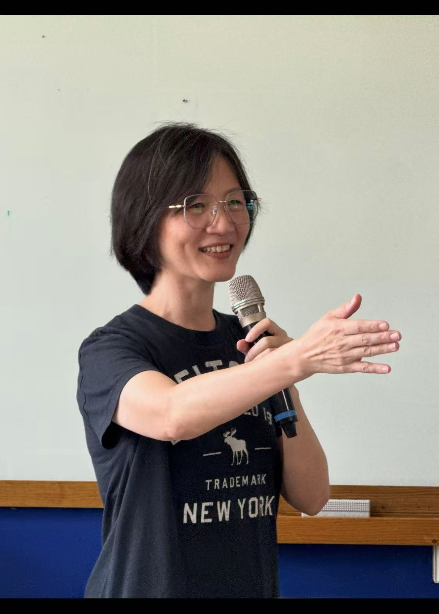

Community Members
每一位成員的投入，
都讓社群更完整。
社群之所以能持續前進，不只因為有明確方向，更因為有一群願意分享、願意修正、也願意彼此支持的夥伴。這一頁整理核心人物與主要協作角色，讓網站更具真實性與辨識度。
前鎮高中地球科學科教師，高雄探究與實作共備社群召集人。
阿虎老師長期投入探究與實作課程推動，擅長從真實問題與在地情境出發，串連不同學校教師的專長，讓課程設計不只停留在理念層次，而能真正回到學生的學習現場。他的帶領風格重視傾聽、對話與持續陪伴，讓社群在專業之外，也保有彼此支持的溫度。
在跨校共備的節奏中，學科夥伴的存在讓探究不只停留在課程方法，也能更穩地回到學科知識、實驗設計與學生理解的核心。

高雄中學化學科教師，為高雄市探究與實作社群的重要化學科協作夥伴。
李麗偵老師長期在化學教學現場累積紮實經驗，能在探究設計、實驗思維與課堂轉化之間提供穩定而關鍵的支持。對社群而言，她的重要性不只是提供學科視角，更是在教師共同修課的過程中，協助大家把想法變得更精確、更可操作，也更能回應學生真正在學習時會遇到的理解挑戰。
成員頁除了列出人物與分工，也需要呈現角色如何在現場發生。以下先以公開安全的活動照片補上三種協作情境；圖說不標示未確認姓名、學校或精確職稱，避免把活動紀錄誤寫成人物履歷。

人物照片適合補足網站的親近感，但正式成員介紹仍需經本人同意後再加入姓名與角色說明。

召集、引導、學科支持與課程設計，往往是在小組討論裡交錯發生，而不是只出現在名單上。

分享與回饋能顯示誰在協助整理問題、提出觀點與推動下一輪共備，適合未來補成正式角色紀錄。
這裡呈現社群目前主要的協作分工與合作樣貌，後續也會隨著參與夥伴持續加入，逐步補充更完整的成員介紹與合作脈絡。
由不同學校、不同學科教師共同組成，負責把教學經驗整理成可共享、可調整的課程設計與任務版本。
連結不同學科視角，讓探究課程在自然科學、生活情境與跨域統整之間形成更完整的學習經驗。
協助主持討論、示範工具操作、整理現場回饋，讓活動節奏更流暢，也讓教師更容易進入共備狀態。
協助社群把形成性評量、反思紀錄與學生表達框架整合進課程，讓學習歷程更能被看見與支持。
協助網站維運、數位工具整合、資料整理與成果上架，讓共備過程中的紀錄、檔案與照片能被更系統地保存與分享。
本頁已預留正式官網的成長空間，未來可逐步增加真實成員照片、學校、學科、專長與合作定位，讓社群樣貌更完整。